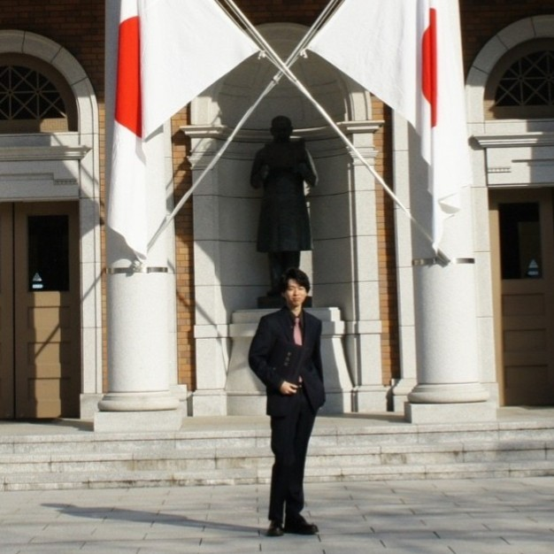

|  |
Name: 村田 樹（むらた いつき）Gender: 男Birthday: 1997年4月8日Birthplace: 埼玉県College: 拓殖大学工学部情報工学科卒業 |
Strong Point |
Weekness Point |
Idol大学1年からアイドルのライブやイベントに行くようになり、もう4年目になります。最初の2年間は乃木坂46のみを応援していましたが、不意に他のアイドルの曲を聴くといい曲だと思ったりメンバーを見てかわいいと思ったりしました。あまりに応援するグループを増やすといろいろな面で大変なので、今は主に二つのグループを応援しています。乃木坂46と神宿です。今はこのご時世なのでなかなかイベントなどもできないですが、いろいろ落ち着いたらまたイベントに顔を出せたらいいなと思います。 |

|
Gameかなり最近からですが、PS4の無料ゲームであるApex Legendsをやるようになりました。このゲームはFPSのシューティングゲームで、3人で1チームのバトルロワイヤル形式です。装備を現地で調達して敵を倒していきます。最近始めたのでまだ全然上手に敵を倒すことができません。友人と一緒にプレイしても足手まといになってしまうので、はやく上手になって一緒に楽しめるようになりたいと思います。 今後やりたいゲームは今年の夏に発売するガンダムのVSシリーズの新作をやりたいと思っています。家庭用での新作は久しぶりなのでとても楽しみです。あとはSwitchが手に入ったらスマブラやどうぶつの森など、いろいろなゲームをやっていきたいと思います。 |